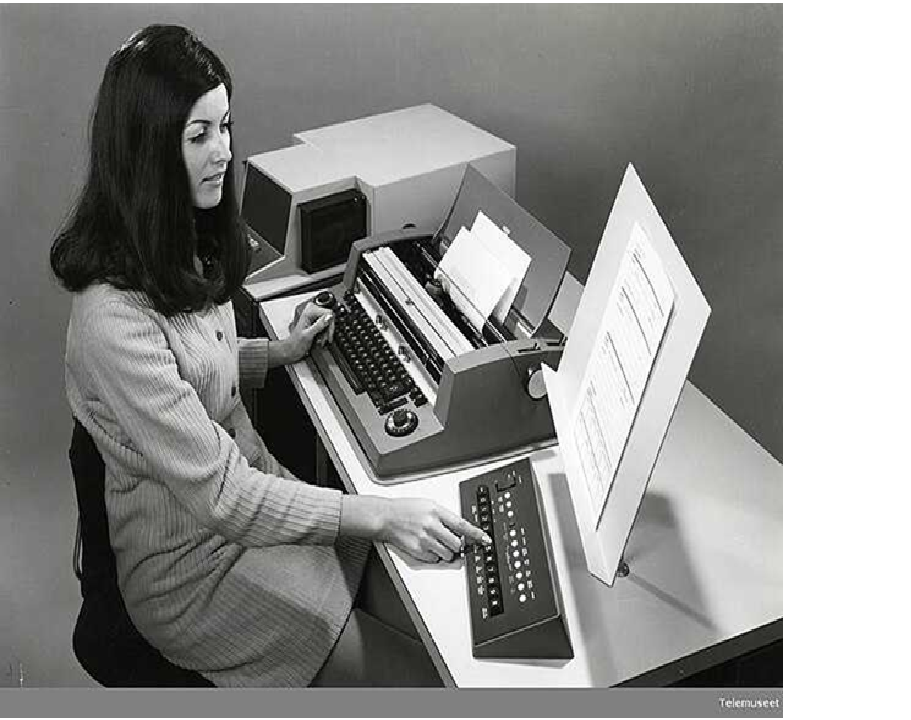
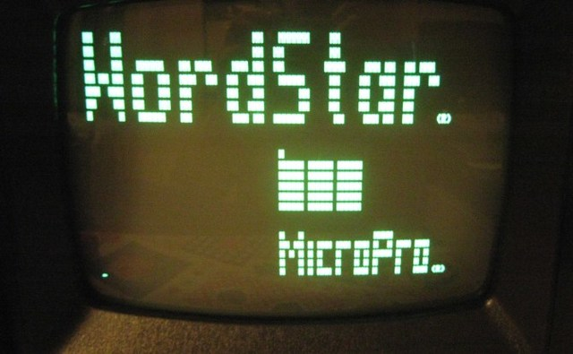
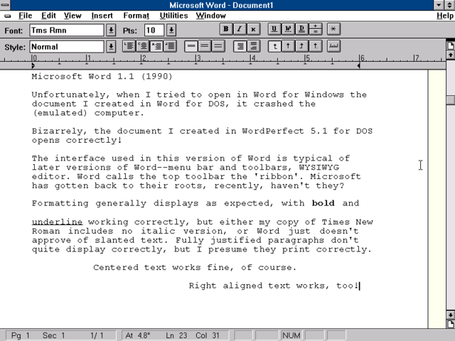
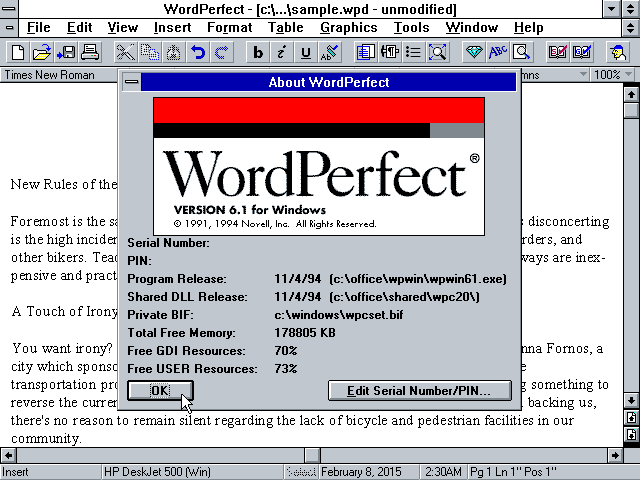
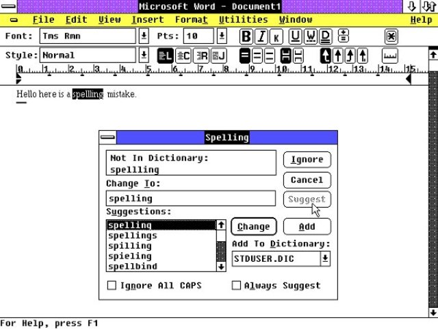
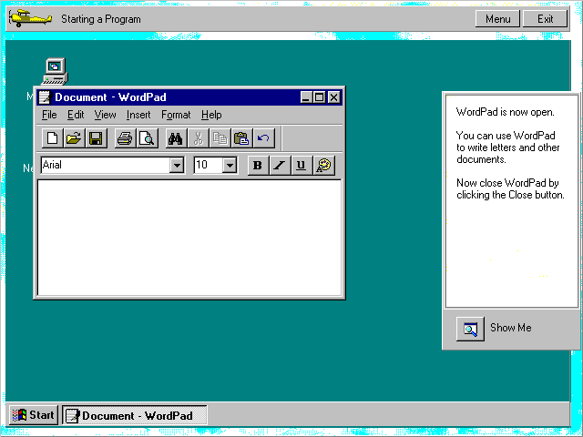

1964
IBM MT/ST
Primer sistema de procesamiento de texto electromecánico que combinaba una máquina de escribir magnética con una cinta de almacenamiento.

1976
Electric Pencil
Primer procesador de texto para microcomputadoras, desarrollado por Michael Shrayer para Apple II.

1978
Word
Star
Primer procesador de texto popular para CP/M, luego adaptado para DOS. Introdujo comandos basados en teclas de control.

1983
Microsoft Word 1.0
Lanzado para MS-DOS con interfaz gráfica primitiva. Introdujo el concepto WYSIWYG (What You See Is What You Get).

1985
WordPerfect
Dominó el mercado de los 80s con su sistema de códigos revelados y compatibilidad con múltiples impresoras.

1990
Microsoft Word Windows
Primera versión para Windows 3.0, estableciendo el estándar para interfaces gráficas de procesadores de texto.

1995
WordPad
Incluido en Windows 95 como alternativa intermedia entre el Bloc de notas y Word.

2006
Google Docs
Primer procesador de texto basado en web con colaboración en tiempo real, cambiando el paradigma de trabajo.

2013
Office 365
Transición al modelo de suscripción con almacenamiento en la nube y actualizaciones constantes.

2020
IA Integrada
Implementación de herramientas de IA para corrección predictiva, escritura asistida y análisis de contenido.